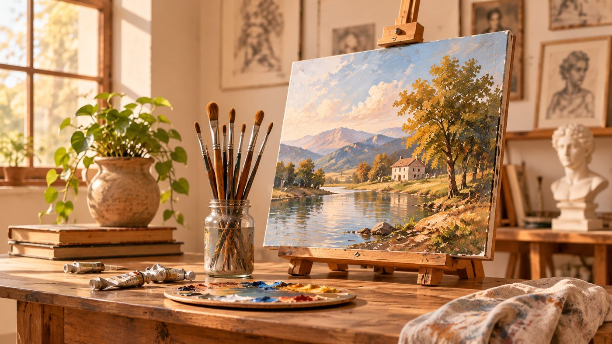

مرحبًا بيك في بصمة، مكانك وسط الفنانين
مجتمع رقمي عربي يجمع الرسامين والمبدعين؛ اعرض أعمالك، اكتشف إبداعات غيرك، وكوّن صداقات فنية تدوم.
تعرف على بصمة
إيه اللي الموقع ده بيعمله؟
بصمة هو مجتمع رقمي يجمع الفنانين والمبدعين في مكان واحد، ويتيح لهم عرض أعمالهم الفنية، واكتشاف إبداعات الآخرين، والتواصل وتبادل الخبرات والأفكار الفنية.
أقدر أعرض رسوماتي على الموقع؟
نعم، يمكنك عرض أعمالك الفنية من خلال صفحة الرسومات، وإضافة صورة العمل واسمه وتصنيفه ووصفه ليتمكن أعضاء المجتمع من مشاهدته والتفاعل معه.
هل أقدر أتعرف على فنانين جدد؟
بالتأكيد. يمكنك استكشاف الفنانين الموجودين في المجتمع، والتعرف على أعمالهم، وإرسال طلبات الصداقة والتواصل معهم.
إيه هي المجتمعات الفنية؟
المجتمعات الفنية هي مجموعات تجمع المهتمين بنوع فني معين أو بمجالات فنية متنوعة، وتتيح لهم مشاركة الأفكار والأعمال والتواصل حول اهتماماتهم المشتركة.
هل أقدر أعمل مجتمع فني خاص بيا؟
نعم، يمكنك إنشاء مجتمع جديد، وإضافة صورة واسم وتصنيف ووصف يوضح اهتماماته الفنية، ثم دعوة الآخرين للانضمام إليه.
أقدر أتكلم مع فنان تاني على بصمة؟
نعم، يتيح الموقع واجهات للمحادثات النصية الفردية والجماعية، مع إمكانية إرفاق الصور الفنية داخل المحادثات.
هل لازم أعمل حساب عشان أستخدم الموقع؟
يمكنك تصفح الصفحة الرئيسية دون تسجيل الدخول، بينما تتطلب بقية صفحات الموقع إنشاء حساب أو تسجيل الدخول للاستفادة من وظائف المجتمع.
إزاي أعرف لو حد بعتلي طلب صداقة؟
يمكنك متابعة طلبات الصداقة وطلبات الانضمام إلى المجتمعات من خلال صفحة الإشعارات، حيث تستطيع قبول الطلب أو رفضه.
هل أقدر أتحكم في بيانات حسابي ورسوماتي؟
تتيح واجهة الحساب الشخصي عرض بياناتك الأساسية وإحصائياتك الفنية وأعمالك المنشورة. أما إدارة البيانات وحذفها وحفظها بشكل دائم فتتطلب ربط الموقع بخدمات خلفية مناسبة.
إيه التحديات أو العيوب اللي ممكن أقابلها؟
يتمثل التحدي الحالي في بناء مجتمع نشط ومتفاعل باستمرار، إلى جانب تطوير الأدوات والخصائص تدريجيًا وفقًا لآراء المبدعين واحتياجاتهم، بهدف توفير تجربة فنية مريحة ومفيدة للجميع.